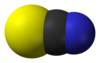

thiocyanate

Definition: Thiocyanate (also known as rhodanide) is the anion [SCN]−, a salt or an ester of thiocyanic acid. It is the conjugate base of thiocyanic acid. Common derivatives include the colourless salts potassium thiocyanate and sodium thiocyanate. Mercury(II) thiocyanate was formerly used in pyrotechnics.
Source: Wikipedia
Wikipedia Page
Wikidata Page